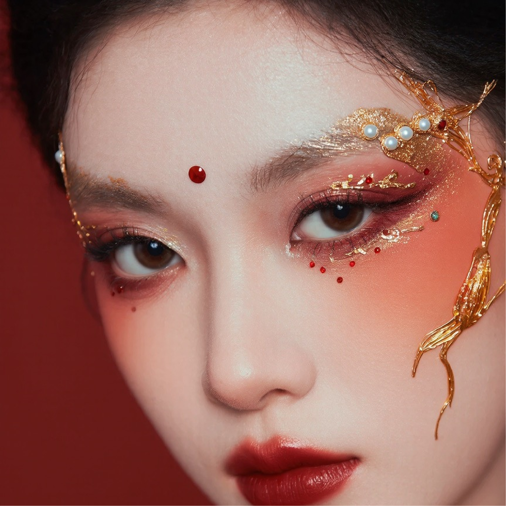
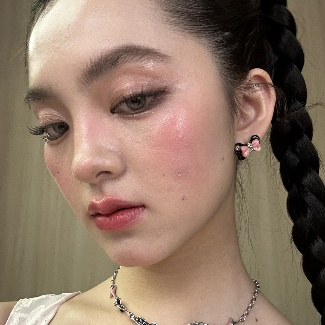
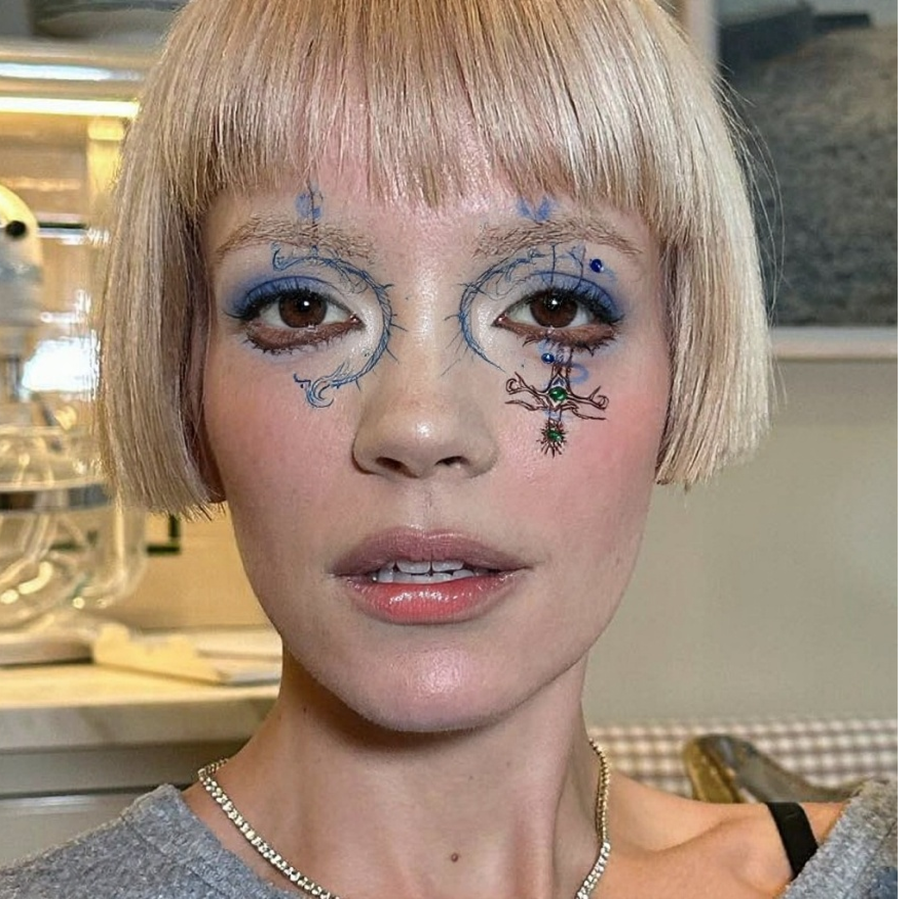
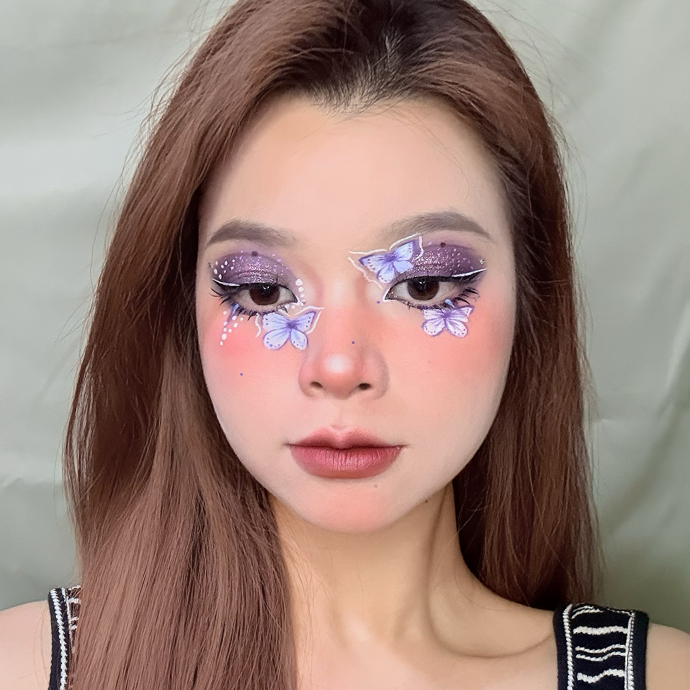
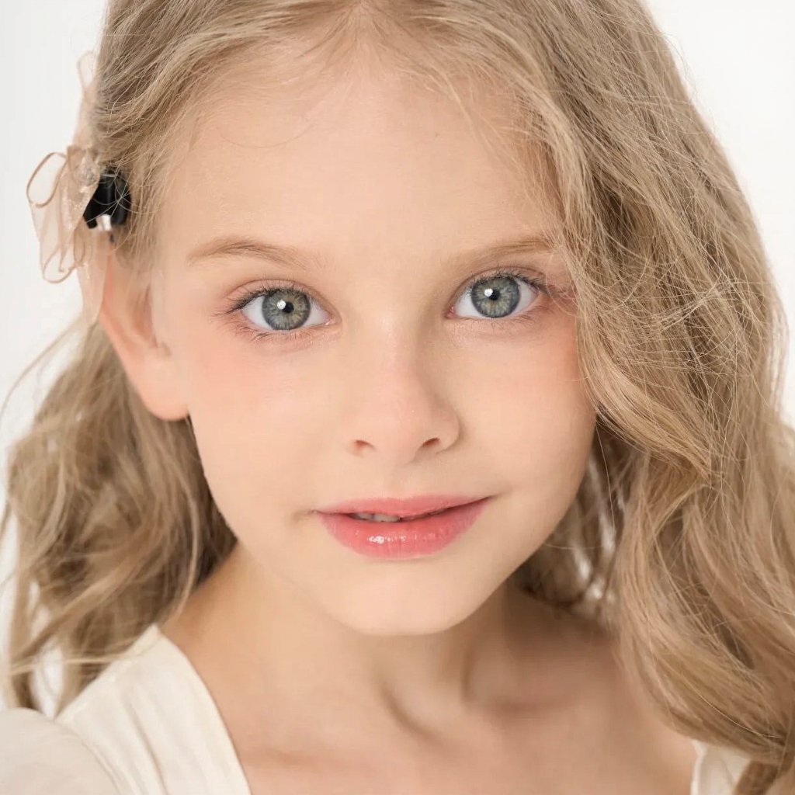
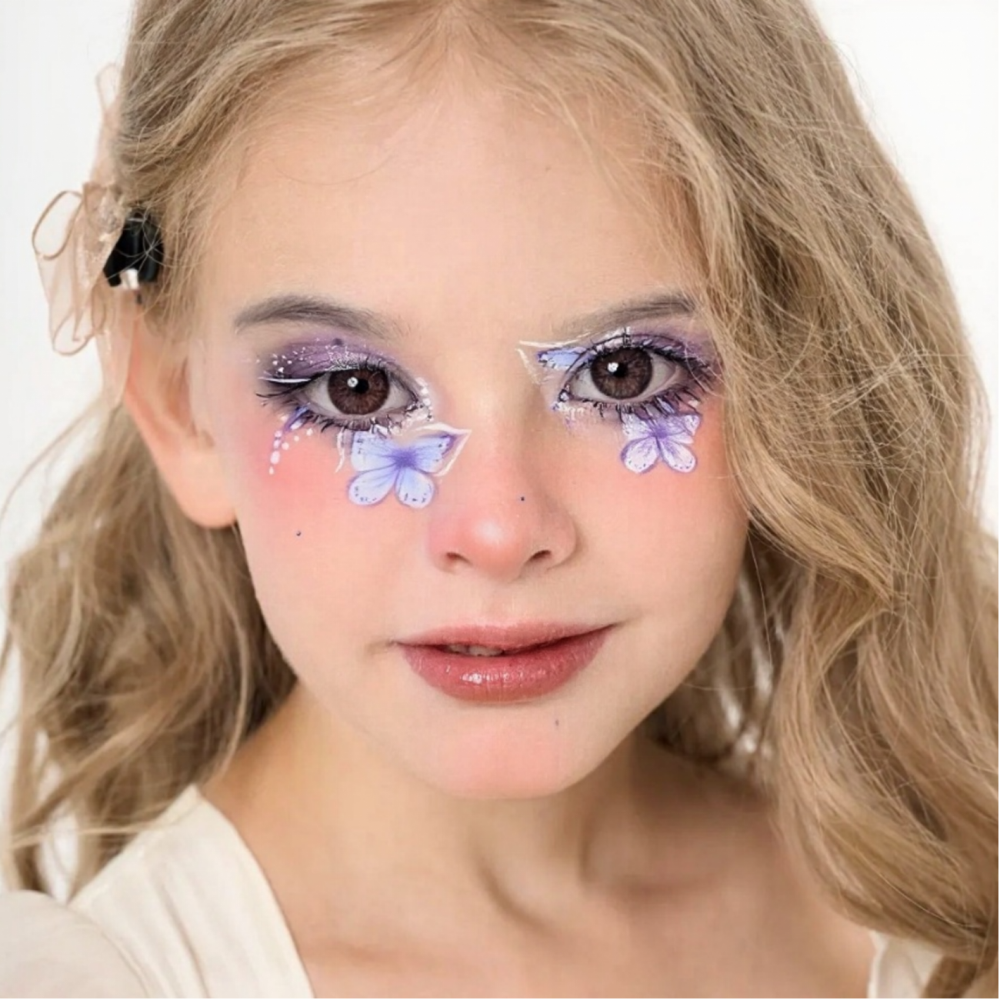
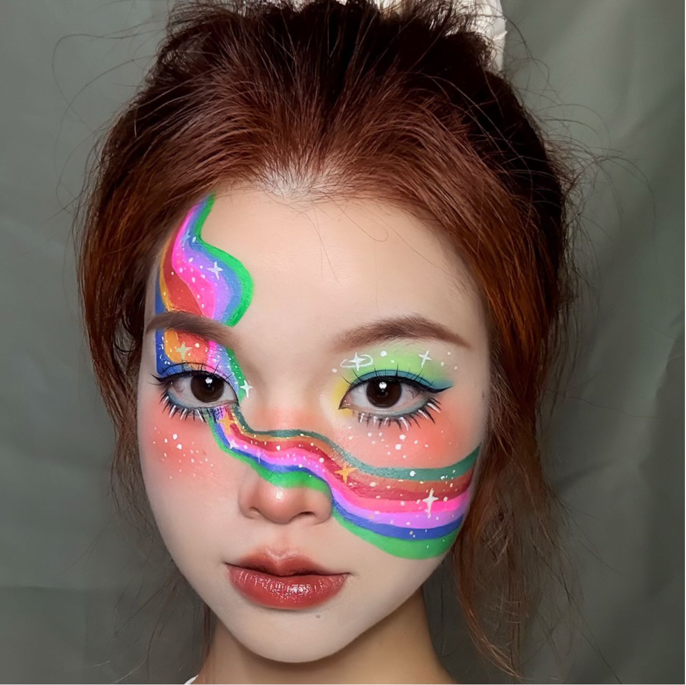
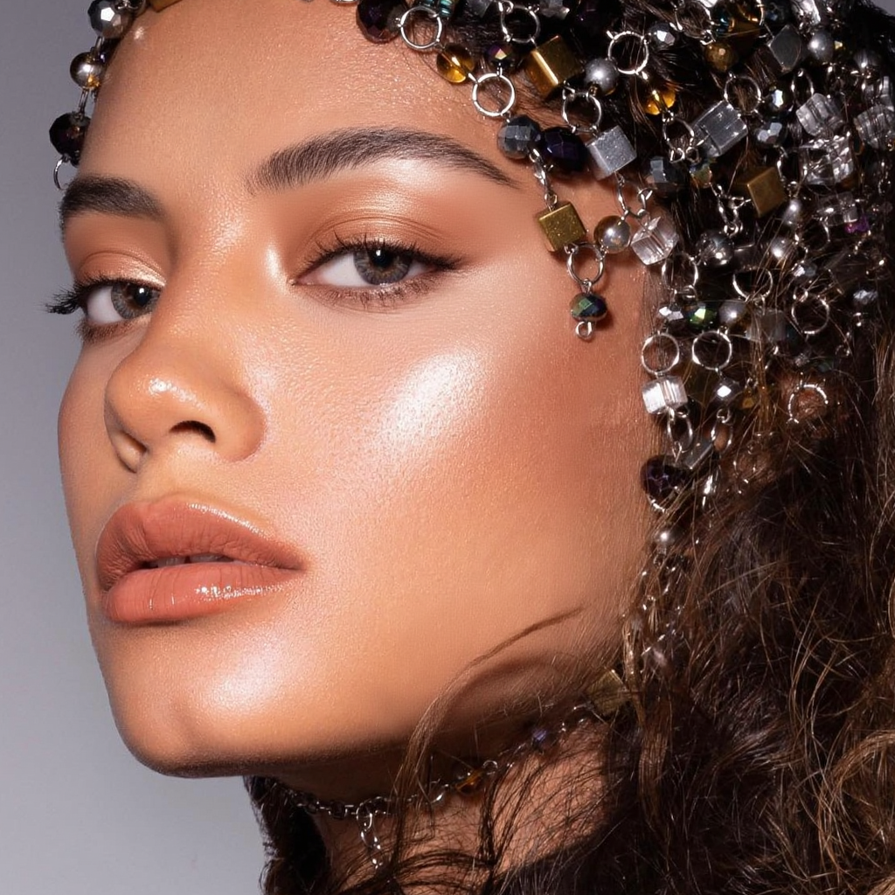
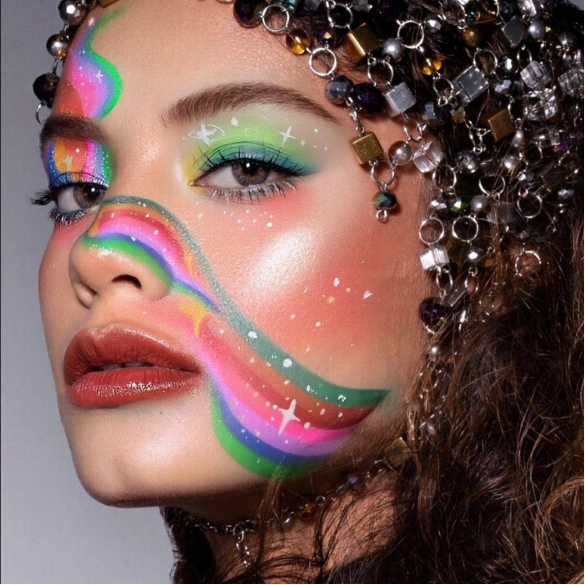

MagicMakeup transfers full-face and regional makeup while preserving source identity, facial geometry, and non-edited regions.

Pixel masks are aligned with attention tokens, then region-specific logit gating blocks cross-region leakage.
Text and image features are aligned to clarify which attributes should be transferred and which identity cues should be preserved.
The benchmark covers synthetic and real 1024 x 1024 makeup-transfer settings with region-level evaluation.










